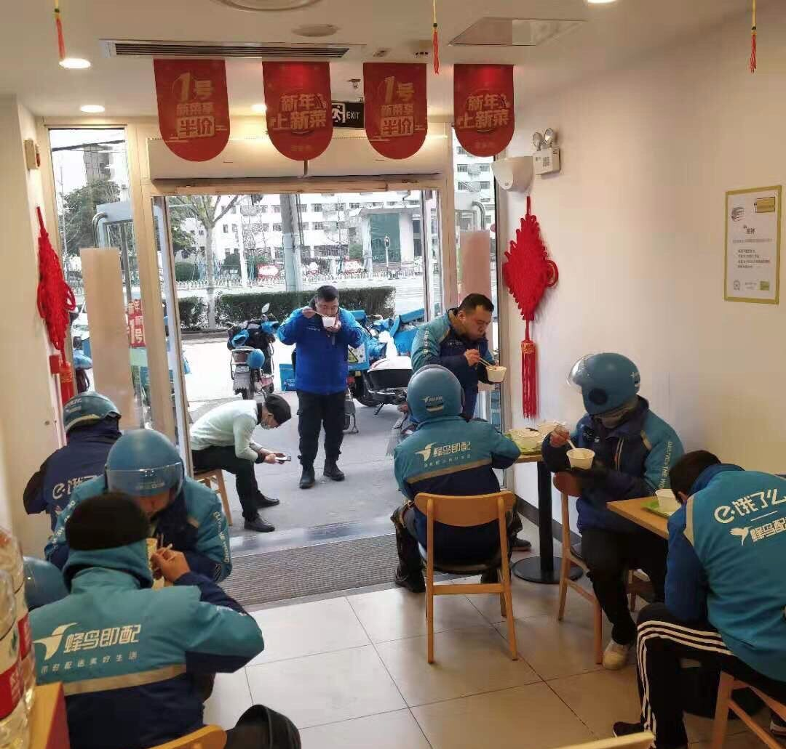

这个春节，每个人都不容易
原文链接 备份链接 昨天，我们发起了征集，请身在疫区的同胞、奋战在疫情第一线上的医护人员、全国各地留守家中防疫的人们讲述这个春节发生的真实故事，在后台收到的近百份留言中，我们筛选并刊登如下，我们是倾听者，也是见证者—— 01 这个春节，是 …

突发的疫情搅乱了这个春节。武汉封城后，居民被迫留在家中、医护人员无法离开工作岗位，吃饭成了问题。与此同时，餐饮、休闲、商超便利等生活服务业也面临巨大考验。
作为居民和商家的连接点，一群隶属于本地生活服务平台的留守外卖小哥站了出来。经历了短期的惊慌之后，他们凭借勇气在大街小巷中穿行，意外见证了一座城市力量的复苏和人性的善意。“从服务医护到服务城市，再到服务行业，商家伙伴们的生命线就是我们的生命线。”外卖平台饿了么如此总结。
在疫情过去之前，唯有共度时艰。我们找到了几位身处武汉的外卖骑手和饭店老板，通过他们的视角，感受这座在肺炎阴霾中努力呼吸的城市。
 封城 1月22日-23日
封城 1月22日-23日
“不好意思，您这里送不了，您取消订单吧。”1月22日下午，饿了么配送员陈琦收到了新订单提醒。有人订了一份大米先生家的煲仔饭，送货地址是武汉一栋民用机构大楼的4楼。
“你要是不给我送餐，我就给你打差评！”尽管电话另一头的男人压低了声音，陈琦还是听出了他的不满和急躁。
在几小时前，饿了么刚刚公布了疫情应对的进一步措施，其中一条是：为确保安全，暂停部分敏感地区的外卖配送服务。
新型冠状肺炎人传人的消息确定后，武汉全城人瞬间陷入恐慌。送外卖感染风险可能更高，陈琦犹豫了一会儿还是想拒绝，道歉、解释了一番。此时，男客户语气缓和了下来，无奈地说自己已经被拒单两次了，他所在周边的餐厅都已关门，实在没办法了。“我家孩子得吃饭啊。”
陈琦想到了父母，一下子就心软了，答应了配送，戴了两层口罩出门。
当天深夜，武汉就宣布了封城令。
21岁的陈琦是土生土长的武汉人，成为外卖骑手后，更是对这座城市的每一个细节都无比熟悉。他初入职场几个月，原本做好了春节加班的打算，白天上班，晚上回家和父母团聚。突如其来的疫情打乱了他的计划——如今，陈琦成天在外面跑，担心自己把病毒带回家，只好继续住在合租屋里。
草木皆兵的形势下，武汉市民起初都不太敢点外卖，陈琦接到的多是超市、便利店的“大单”。有一个22号的单来自协和医院门诊部，他赶到中百超市提货部，地上放着六个装满零食、面包、冲剂饮料的大塑料袋，旁边还有两箱牛奶。陈琦皱了下眉头，以为这是有人去医院拜年，买的年货。
外面正下着雨，陈琦担心装货不方便，给客户打电话说明配送困难。没想到，接电话的是一位女医生：“我们一直都没吃饭，累得受不了了，你帮帮忙送过来吧。”女医生想到自己写着“20层”，怕陈琦有负担，紧接着说：“你送到门口给我打电话，我自己找个推车下去拿。”
陈琦一听是医生的订单，赶紧找了一卷绷带，把牛奶固定在车前，又用松紧带把大包小包捆在车子后面，骑上车出发了。生怕东西掉了，平时只需要4分钟的路程，他骑了一刻钟。
卸下货物后，陈琦一个手指拎一样东西，只空出两个小拇指，径直走进门诊部侧面的职工电梯。电梯在20层停下，陈琦意识到自己没消毒，踏出一步便不再往科室里走。
出来取货的是一位年轻护士，她快步走到陈琦面前，弯腰拿东西时看见了陈琦勒红的双手，说了很多感谢的话。隔着口罩，陈琦咧着嘴笑了。
走出面向解放大道的门诊楼，陈琦骑车拐到了新华路上，瞟了几眼医院侧面的发热门诊。平时送餐，陈琦经常路过这里，这座老楼总是很安静，少有人进出。可是这天，门口的长队缓缓向内蠕动，人人戴着口罩。晚上收工后，陈琦看新闻，全国确诊473例，比前两天又多了一倍。
第二天早上，站长照例在工作群提醒在岗骑手，开工前到站点完成领取口罩、测量体温、喷上衣物消毒剂等“必备流程”。10点，武汉全市公共交通停运。空无一人的大马路，和往年春节的武汉看上去差不多，但陈琦还是觉得格外陌生，一点儿年味都没有。
 受访者供图|武汉封城后的夜晚
受访者供图|武汉封城后的夜晚
封城令下，原本零星开着的餐厅陆续关闭了大门。大年三十，在一线与疫情战斗的医护人员，晒出来的年夜饭只有饼干、方便面。肥肥虾庄石牌岭店的老板看到这些图片，心底觉得难受，连夜找人做好了400份饭送往陆总医院。
今年的除夕夜，吃上一顿团圆饭成了奢侈的事。
陈琦和同事送完了农历旧年的最后一单，各自回到了出租屋。室友老秦做了几个拿手菜，俩人就着一瓶酒聊天，拿春晚作背景声。老秦说，想老婆孩子了。老秦是山东人，想趁过年多挣几天钱，把家人接来武汉玩，没想到被困在城中。两个孩子在视频通话里给老秦拜年。陈琦见老秦眼睛红了，跟他开玩笑：“等五月份天气热了，病毒没有了，到时候你就回家吧。”
疫情扩大化后，饿了么等企业调整了配送策略。在封闭的武汉城里，饿了么的众多骑手都被动员起来。为了打赢这场持久战，公司为他们做好了后备支撑，封城之前，武汉地区已将口罩、消毒液、体温计等物品配备完毕。大年初一，城市经理带着应急小组又从仙桃市调度了30万个口罩，确保物资储备能使用到2月底。
和老秦一样，36岁的江涛今年也独自留在了武汉。往年大年初一，是江涛一家人走街串巷拜年的日子。今年这天早上八点多，江涛就接了一单跑腿代购，订单详情上列了连花清瘟胶囊等四种药品。
江涛负责的区域离协和、同济不远。随着储备的快速消耗，居民区对菜品、药物的需求量变大，但是很多人不敢出门采购，只好求助于外卖和代购。有一次，他帮客户去超市抢购，40斤大米、一壶油、肉和蔬菜，加起来先垫付了1065元。
蔬菜和特殊药品越来越不好买，附近的药店大都关了门，但他还是决定试一试。从解放大道找到万松园小区，再到西北湖，药店要么没营业，要么没货。眼看已经快十点了，他主动向客户提出：“我这儿离协和近，要不我去医院给您看看？”
客户很意外，给他强调：“那你一定要做好防护，口罩多戴几个。”
十分钟后，江涛站在了协和医院发热门诊的挂号队伍里。一片混乱，江涛想不出其他的形容方式。不时有救护车的声音响起，穿防护服的医生穿梭在人堆里，身旁全是等着治疗的病人。江涛顾不上害怕，挂了号，按护士提示找医生开药，简短几句交流，他才知道单子上是“防疫情”的药。付费取完药，已经过了十一点。

受访者供图|武汉协和医院发热门诊
到了客户家门口，江涛不敢离太近，伸手把药递进去。这家女主人倒是不介意地敞开了门，一边给江涛转账，一边问：“你吃饭没有？”“我都十几天没见过米饭咯。”想到自己囤的方便面也快见底了，江涛有些不好意思。
“我估计你也吃不上饭，外面哪还有吃饭的地方，你等等，我刚好留了一点饭菜。”女客户从餐桌上拿来装好的盒饭，“我在饿了么上面看着你的车，一下子去这个地方，一下子去那个地方，折腾一上午，真是辛苦了。”
中午回到宿舍，江涛吃上了新年第一顿饭。他给妻子发去消息，分享了这份感动：“世界上还是有好人啊，你为人家付出了，人家也能体谅你。”
吃完午饭，江涛准备继续干活。打开App接单时，弹出了一条消息：饿了么宣布推出全国骑手特殊关爱保障计划，专门寻求保险供应商为骑手投了“肺炎险”。江涛没有细看，像寻常一样，看到官方提示就快速填写了个人信息，新的订单在等着他出门。
 *支援 1月26日-27日*
*支援 1月26日-27日*
大年初三的武汉街道一片寂然。老乡鸡饭馆的卷闸门被轰地拉开，店员们钻进厨房，闲置了几天的炉灶，又架起滚着热鸡汤的砂锅。两个多小时后，这些饭菜被专车送往武汉各大医院。
在此之前，疫情肆虐，100多家老乡鸡连锁店在节前纷纷关闭。和其他同行一样，这家全国知名的连锁快餐企业饱受打击。
一筹莫展之际，老乡鸡店长李神龙看到了“医护人员吃不上饭”的新闻。除夕夜，许多医护人员刚刚从前线撤下，搁在桌子上的“年夜饭”，只有桶装方便面。
他立即向上级请示临时开店，为医护人员供餐。李神龙在工作群里写了一大段话，发动留在武汉的同事一起参加。手机刚刚放下，很快有员工打来电话：“店长，我能去。”李神龙没有立刻答应，他怕员工一时冲动，一再强调了留下来工作的风险，最后再问：“还来吗？”
次日清晨，员工们全部到岗。网上下单后，电话那头的医生没来得及说话，直接哭了出来。然而，整个老乡鸡武汉区域只有6辆餐车，每辆车只装得下30多份。李神龙强忍眼泪，开着自己的私家车给医院送餐。

受访者供图|老乡鸡为医护人员备餐
1月26日，饿了么宣布开通“外卖极速上线”服务，商家们提交经营资质、身份信息，最快可以在申请的当天就开通外卖服务。消息发出之后，有百余家餐厅、便利店递上了上线申请。外卖骑手们戴上头盔，系好口罩，骑上电动车出动，接过最后一站的接力棒。
待在老家过年的郑琪接到了紧急命令，他被临时调去对接饿了么物流。本该睡懒觉的早晨被闹钟铃声打破，他翻起身，坐在电脑前。早上九点过后，餐厅、站长的消息一齐涌过来，不到半个小时，七八个医院的诉求猛涨。
中午十二点，用餐高峰期过去，郑琪才顾得上吃一口饭。父母不解，语气里有些责怪：“为什么在家里还要忙七七八八的事情？”
郑琪顾不上其它，他忙着调度骑手。站点自掏腰包采购了270份盒饭，亟需送往协和医院在内的三家医院。
每天来自医院的订单超过2000份。起初，为了打消骑手们的顾虑，饿了么平台为他们配备了手套、口罩等设备，在行业里率先开发了“安心送”的产品，支持“无接触”送餐，只需把饭菜放在医院门口，又在群里开了动员大会。
配送前需要收集骑手名单，每次站长把医院的配送需求发到工作群里，30秒后，底下已经集齐所有骑手，比其他类型的订单都快。
接近饭点，协和医院门诊楼外停着几辆蓝色的电动车。走到大门前，骑手舒雷有点忐忑。医院设置了隔离区，骑手们只需远远地站着，等着护士下楼取餐即可。尽管如此，家人仍不同意他出入医院等场所，为了正常送餐，舒雷只好瞒着家人。
纸箱勉强装下几十个饭盒，下楼取餐的只有两位护士。拎过袋子，护士们告诉他，在此之前，医院里的人只能靠饼干和方便面度日。工作强度太大，医疗人员的营养没法跟上。护士的话让他感到心酸，愧疚感与责任感渐渐击退了对病毒的恐惧。
1月29日，湖北省确诊病例达3554例，疫情再升级。
对外界而言，武汉是一座危城。而提供服务的餐饮从业者们最明白，灾难总会过去，温暖和力量正一点点在这座城市重新生长出来。
被疫情打懵的武汉居民们，开始用自己的方式表达对一线工作人员的关心。封城的前七天中，饿了么外卖单上备注“武汉加油”等字样的订单有5504条，备注“注意疫情”的有4563条。一名骑手经过武汉爱家国际华城，夜幕沉沉，他点燃一根烟，坐在路边休息。突然身后的楼房传来断断续续的喊声：“武汉加油！”他低头擦了擦眼：“妈的，烟熏了眼睛。”
陈琦也在送外卖时，收到了这样的暖意。29日，他接到了万科小区的订单，留言上写着：“送到后，挂在门口就好，家里有发热的人，不方便开门。”到了客户家门口，看见了客户特意为他准备的两只口罩。
陈琦留意到，好几位宅在家里自我隔离的居民，会特意备注上新年祝福。数据显示，截至大年初四，武汉有1289个饿了么订单外卖出现了“过年好/新年好”。原来，消失的年味用另一种形式保留了下来。家人不在身边，还有许多人在一起度过这个特殊的年。
有些用户重复在李神龙的店里点餐。有次送餐，身穿黑色羽绒服的医护人员认出了他们：“中午那顿是我两天来吃过最好的饭。吃那个鱼，我都要哭了。”女配送员一时不知如何回答，只能拍着护士的手，反复安慰她。
付出得到回报，李神龙店里对接的医院由刚开始的四五家增加到十余家，老乡鸡的十多家连锁店也恢复了运转。

受访者供图|老乡鸡为饿了么骑手提供餐食
得益于平台方的政策，许多和老乡鸡一样的餐饮服务企业逐渐复苏。饿了么所属的阿里本地生活服务公司及时做出“五个决定”，除了商家外卖服务急速上线，还减免商户佣金、年费延期、提供贷款金融支持、赠送最高30万元的肺炎险。阿里巴巴集团合伙人、阿里本地生活服务公司总裁王磊解释，平台和商家辅车相依，“我们相信守望相助的力量，商家伙伴们的生命线就是我们的生命线。”
前天，陈琦在中百超市门口等着派单，一位60多岁的大爷招呼他过去帮忙。大爷一个人出门买菜，结完账拎不动。陈琦正好不忙，于是替大爷把菜送到了一公里外的小区，搬上了五楼。
“感谢你啊，年轻人真好。”大爷坚持要给打赏，陈琦谢绝了。大爷从兜里掏出一个红包，说一定要收下，是新年祝福。陈琦猜想，这应该是给还没团聚的孙子准备的吧。他收下了红包，认认真真地给老人拜了一个年。
*文中陈琦、江涛、老秦为化名
撰文 | 成琨 陈晓妍

原文链接 备份链接 昨天，我们发起了征集，请身在疫区的同胞、奋战在疫情第一线上的医护人员、全国各地留守家中防疫的人们讲述这个春节发生的真实故事，在后台收到的近百份留言中，我们筛选并刊登如下，我们是倾听者，也是见证者—— 01 这个春节，是 …
原文链接 备份链接 武安医生（化名）所在的医院是孝感市三家抗疫医院之一。距离武汉66公里的孝感是距离武汉最近的地级市，截止到1月28日上午，有确诊病例173例。与暴风眼武汉一样，以孝感为代表的武汉周边小城也正在经历着决战时刻。 坐诊之 …
原文链接 备份链接 新型冠状病毒疫情像是一场突如其来的阴霾，在这个冬天笼罩了华中大地。相较于最受关注的武汉市民，周边城市的人们，像是处在阴霾边缘，遭受侵袭，却又不常被看见。面对重重困难，孝感、黄冈、黄石、信阳、荆州、天门……各个城市的百姓 …
原文链接 备份链接 自新型肺炎疫情爆发以来，湖北乃至全国多个省份的医院因防疫物资短缺，向社会发出求助。而另一种声音却在说防疫物资是充足的，没有短缺。一时之间，防疫物资成为了薛定谔的猫。 今日来信的这位作者，便是自发为一线医院筹集防疫物资的 …
原文链接 备份链接 几位口罩行业的从业者，都是在大量微信、电话疯狂轰炸的间歇，接受我们采访的。所有人的语速都异常急促——在过去的一周时间内，他们接过工信部、各地应急办、市级政府的电话；也接过各省医院、药店、大小代理商的电话；还有从未打过交 …